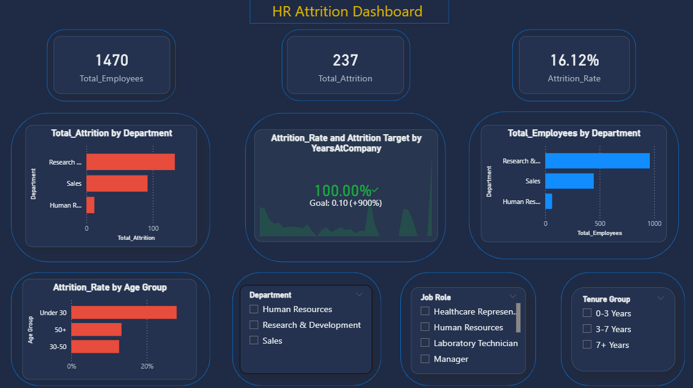
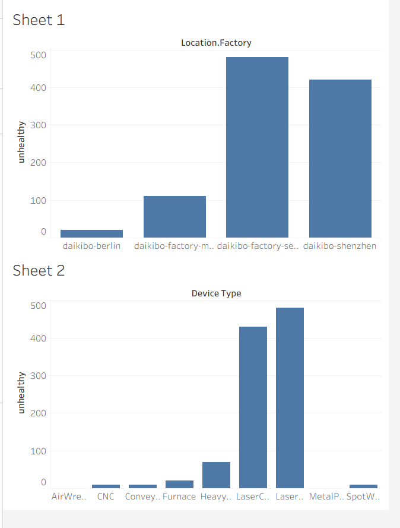
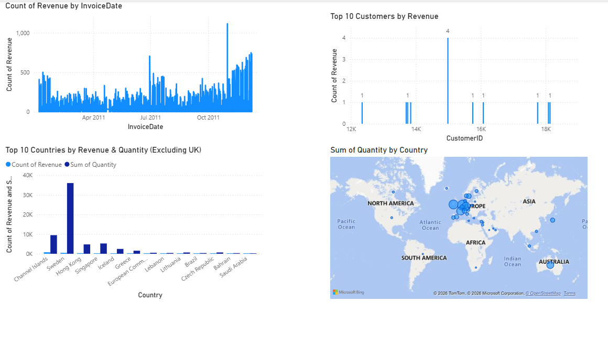

This dashboard analyzes employee attrition patterns, identifying key factors such as job satisfaction, salary, and work-life balance affecting employee retention.

Performed exploratory data analysis to extract insights, clean datasets, and identify trends to support business decision-making.

Created interactive visualizations to represent key business metrics and improve data-driven storytelling for stakeholders.